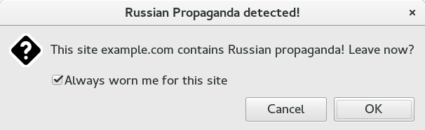

russian Propaganda Detector
Warns the user if the current site is a part of the Russian propaganda in Bulgaria.
You can install the addon from:
https://addons.mozilla.org/firefox/addon/russian-propaganda-detector/
I got the sites list from: https://gist.githubusercontent.com/yradunchev/3cecf6fba6b74d582d30/
Thanks to Yordan Radunchev for compiling this list.
It expresses the author's opinion and doesn't pretend to be 100% accurate or comprehensive.
Usage
When you visit a site from the above list - a warning dialog will appear, asking you to confirm leaving the site.

If you don't want to receive warnings for a particular site - uncheck the checkbox "Always worn me for this site" when the warning appears for this site.
Press the Ok button to leave the site, or the Cancel button to ignore the warning.
If you don't want to receive such warnings at all - uninstall the add-on or don't install it in the first place!
Enjoy!